Culture
현대적으로 재해석한 전통문화에 주목
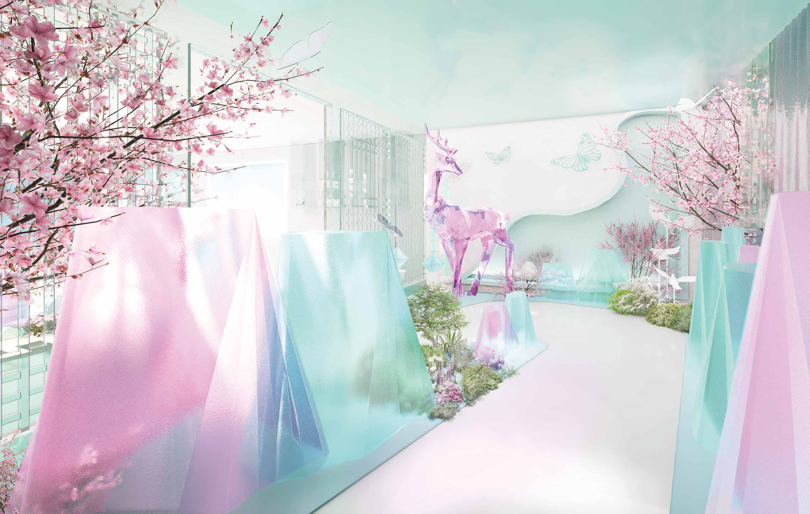
Selected project 02 / VMD · Pop-up store
전통 문양을 발견하고, 제품과 연결하며, 나만의 경험으로 완성하는 뷰티 팝업 공간 제안.
CLIO × 국가유산청 · 가상 협업 기획 · 공동 프로젝트
01 / Background
K-뷰티와 전통문화에 대한 관심을 바탕으로, 전통의 디테일을 현대적인 소비 경험으로 연결하고자 했다.
현대적으로 재해석한 전통문화에 주목
K-뷰티 선호 소비자의 참여형 경험과 SNS 공유 특성 고려
성수동 팝업 밀집 상권과 트렌드 소비층을 고려한 입지 선정
02 / Brand strategy
현대 뷰티와 제품 경험
전통문화와 왕실 문양의 상징성
전통 문양을 단순 장식이 아닌 제품을 발견하는 경험으로 어떻게 전환할 수 있을까?
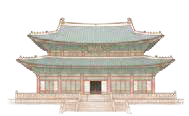
03 / Concept development
제품 속 문양에 주목하고 전통의 디테일을 동화적으로 재해석한다.
왕실 문양과 전통 건축의 디테일을 모티브로 선택
민트와 핑크, 반짝이는 소재로 환상적인 분위기 연출
문양 탐색에서 제품 발견과 개인화 경험으로 연결
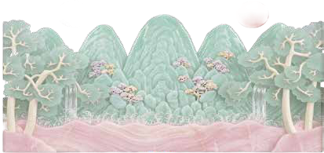
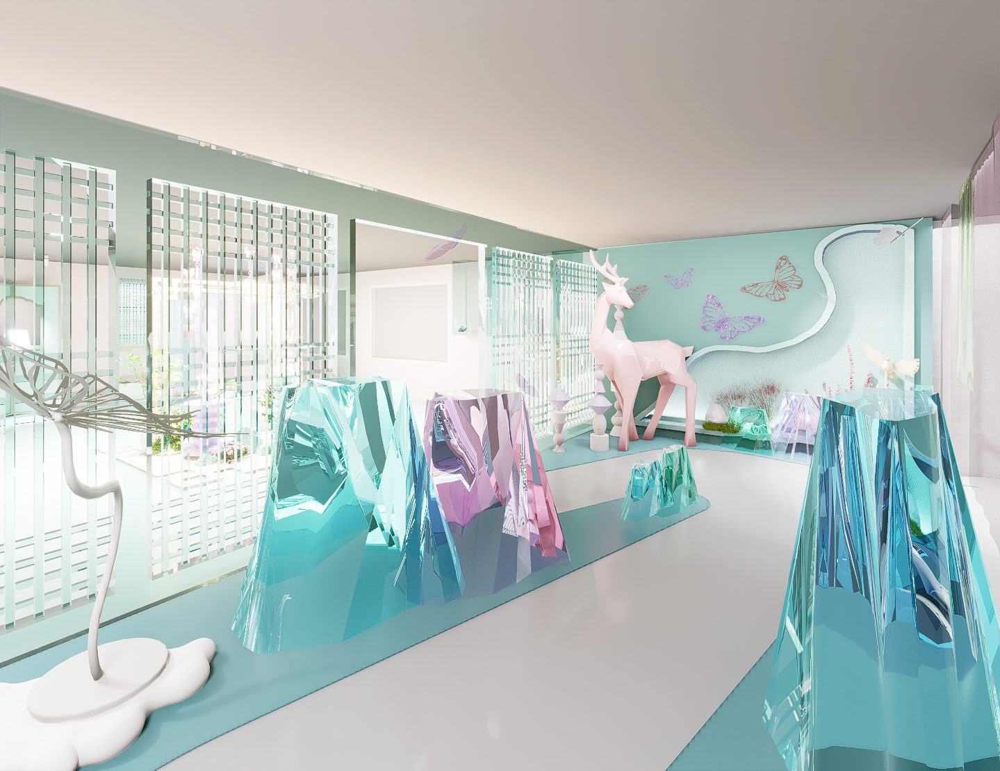
04 / Material & color
빛을 반사하는 표면
은은한 결을 지닌 소재
투명감과 반짝임을 활용한 연출
05 / Spatial planning
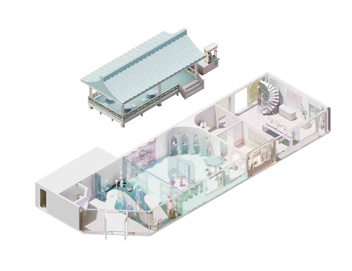
몰입형 진입 공간에서 브랜드 메시지를 전달하고 문양 체험을 거쳐 제품 발견과 커스터마이징, 휴식으로 이어지도록 계획했다.
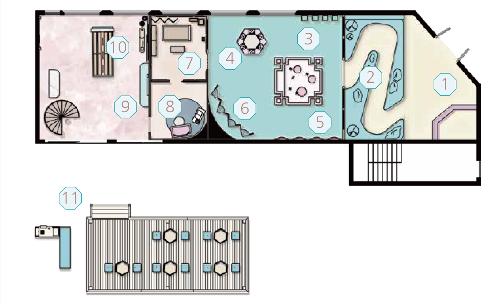
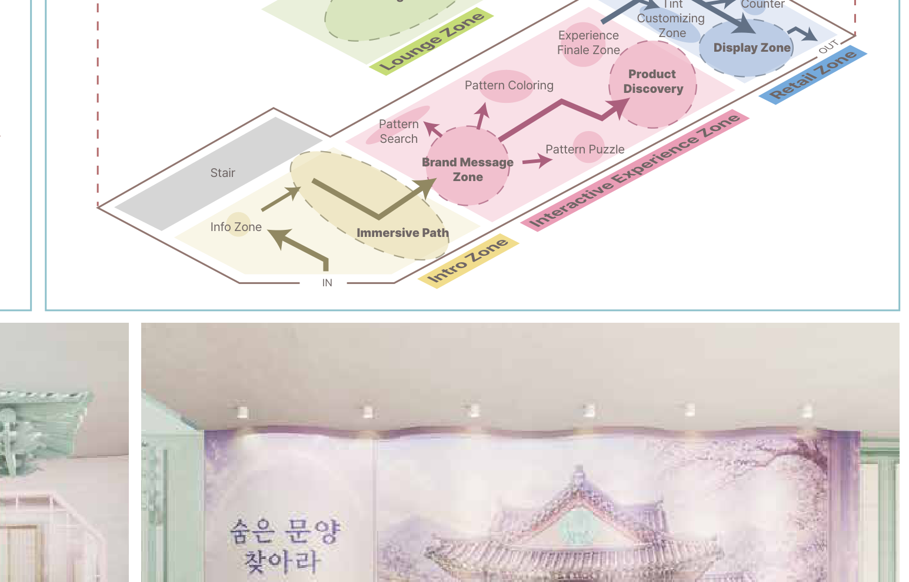
06 / User experience
07 / VMD strategy
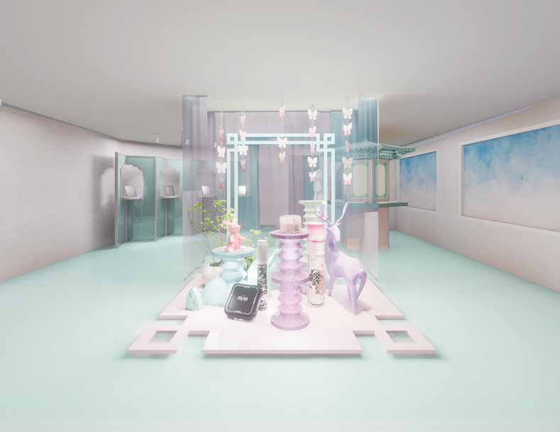
브랜드 세계관을 첫 장면에서 전달하고 시선을 집중시키는 연출.
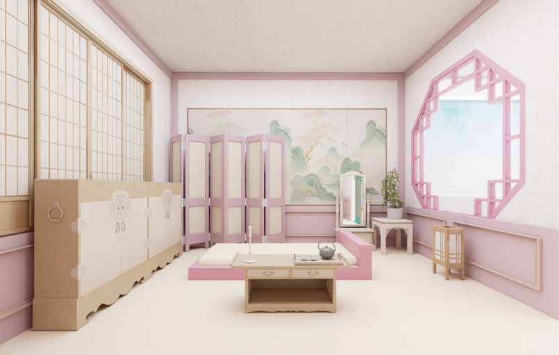
제품을 복원된 왕실 유산처럼 연출해 이야기와 제품의 연결을 강조한다.
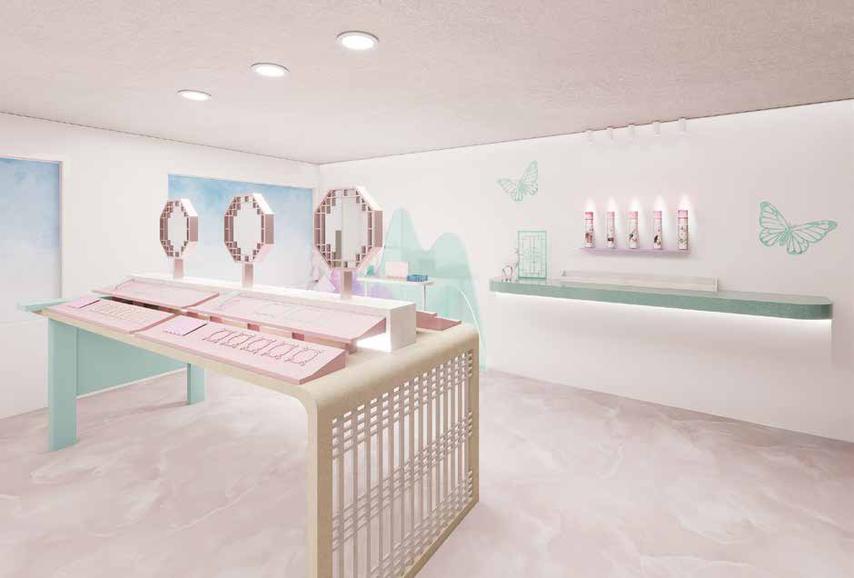
제품을 비교하고 선택할 수 있도록 개별 상품 중심으로 구성한다.
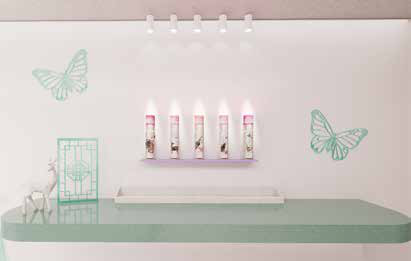
제품의 문양과 색상을 가까이에서 확인할 수 있도록 연출한다.
08 / Interactive experience
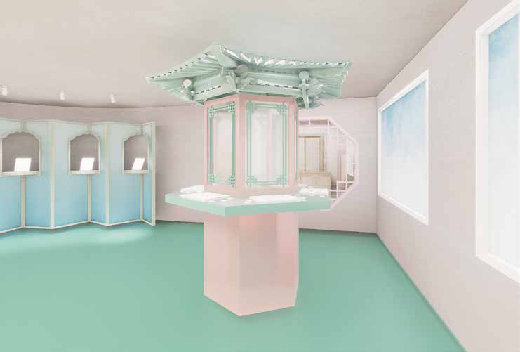
문양 조각을 조합하며 전통 문양의 형태를 인식하는 체험.
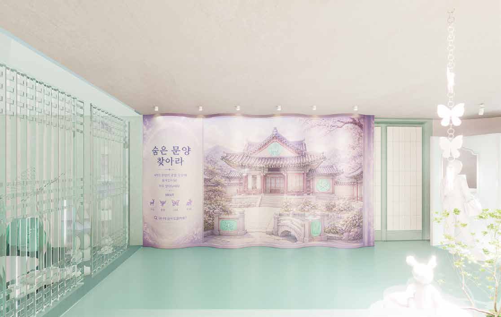
공간 속 숨은 문양을 탐색하며 능동적인 관람을 유도한다.
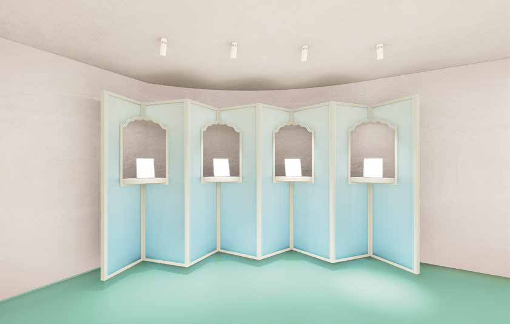
컬러링 패드를 활용해 문양에 직접 색을 입히는 경험.
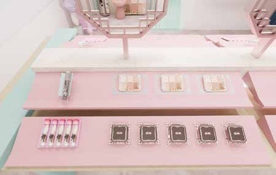
컬러링 결과물을 제품에 연결하여 개인화된 경험으로 완성한다.
09 / Spatial gallery
본 프로젝트는 가상 브랜드 협업 및 공간 설계 제안이며, 실제 브랜드 협업이나 운영 성과를 의미하지 않습니다.